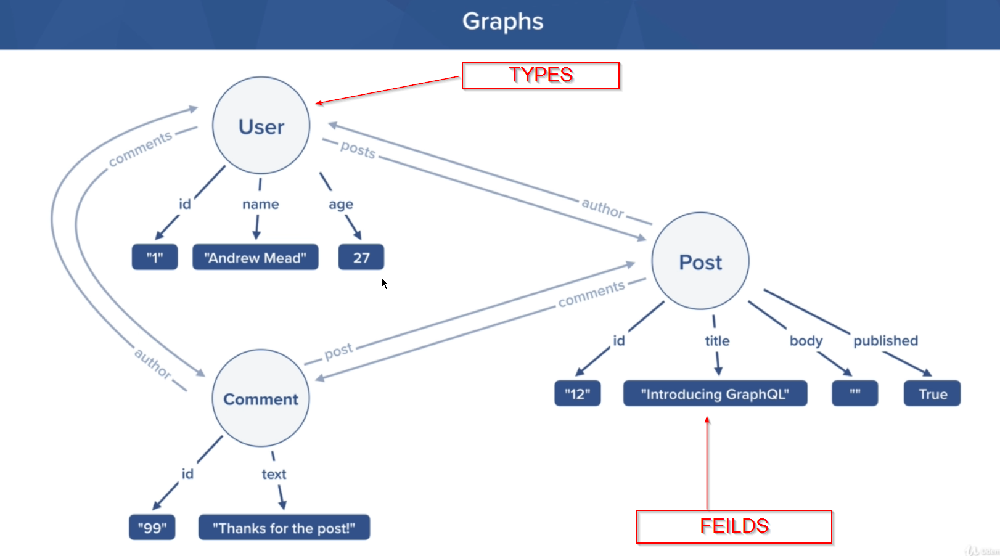

This is bsically the db schema that we create in MYSQL. At the end of the day this is how we will be representing our qraphql.
Where each entity i.e User, Post, Comment are called Types
Ans the poperty of these types are called the fields

This how graph QL looks like